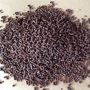
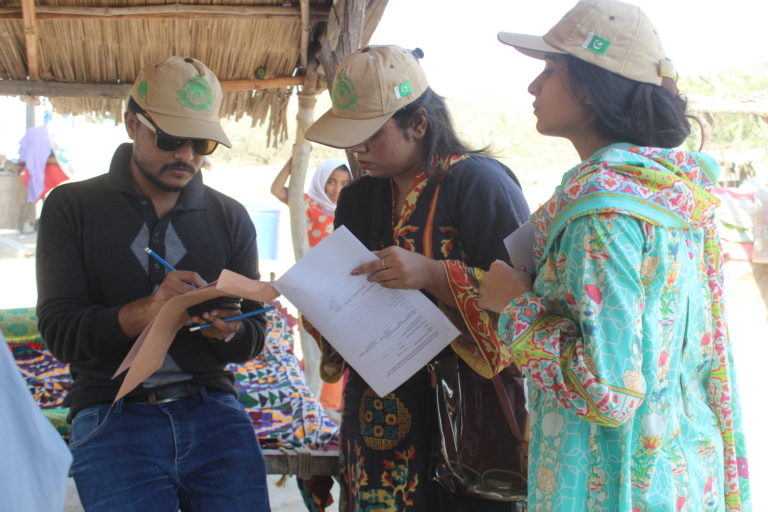
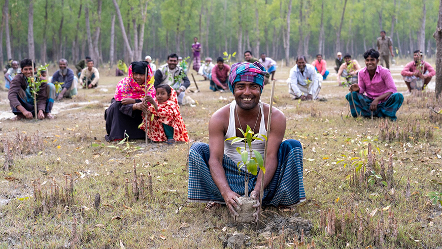
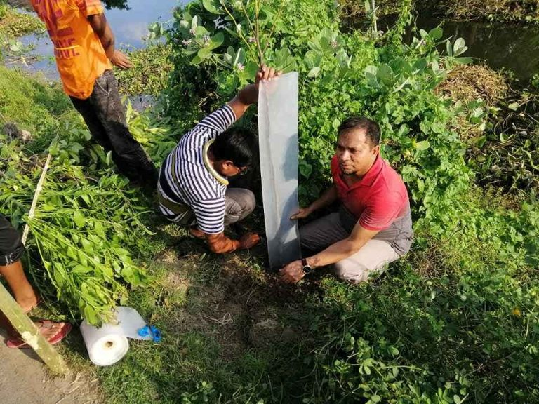
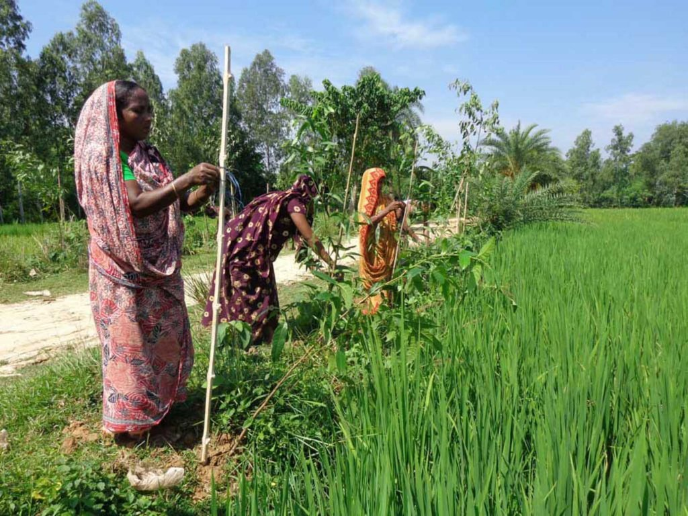

Tea is the most common beverage consumed after water. It is brewed from the leaves of Camellia sinensis (family: Theaceae). Different types of tea manufactured are: oolong, green, black and Ilex tea depending on the post-harvest treatment and palatability of a particular region. Being rich in natural antioxidants, tea is reported to be effective against colon, oesophageal, and lung cancers, as well as urinary stone, dental caries, etc. Tea found to be anticariogenic, anti-microbial, anti-inflammatory, anti-carcinogenic, anti-oxidant can be used as an effective preventive agent. Healthy Foods’ containing active scavengers of free radicals are very popular nowadays. The chiefly chemical components of green tea include polyphenols, caffeine and amino acids. Tea also contains flavonoids compounds reported to have anti-oxidant properties having many beneficial effects. It is widely accepted that phenolic compounds of certain foods have potential health benefits. Tea is linked to beneficial effects on human health with the polyphenols as the responsible constituents. India is one of the largest tea-producing, exporting and consuming country. The present review focuses on the production, composition and the beneficial effects of tea consumption on human health.
It is the environmental challenges in Cambodia which have the most devastating effect on local economies and industries. Climate change has altered weather patterns leaving Cambodian farmers anxious, and uncertain whether their parched rice fields will be flooded soon. In response to environmental challenges, and climactic shifts, Cambodians must take matters into their own hands and respond to new threats. Trailblazers Cambodia Organization introduces unique strategies to village communities, equipping them to adapt to these environmental challenges.
Can you tell us more about the look you have created? JUDITH: For this look inspired by South Africa, I turned our guestroom into a cozy lush jungle. A place where you can sit down, chat, read a book and enjoy being surrounded by all the different plants from South Africa. A comfortable place with beautiful textiles and natural materials like linen, jute and cotton and a lovely plant shelfie with some smaller plants and handmade terracotta items. What inspired you to choose South Africa? JUDITH: When I think of travel, I instantly think of lush plants like palms, banana trees and plants with big leaves like Strelitzia. Strelitzia is a genus of five species of perennial plants that are native to South Africa, so that was my starting part. Being born and raised in the Netherlands, hearing South African slang in Afrikaans always makes me smile. And then there is contemporary South African design: it’s such an interesting mix of graphic shapes and craftsmanship. Styling this cozy jungle made me want to travel to South Africa even more!
Today we want to take you on another home story for our ‘A World of Plants for USM Haller’ campaign. We have taken you on a tour of a green home office in Berlin, a southern French hallway design, and now we want to show you a collected Berlin home with strong vintage vibes – of course equipped with the new USM plant shelves
 Some of you might recognize Theo from our Plant Tribe book – after all, she is a real plant lover just like us. She also loves interior styling – with a special knack for collected, vintage pieces. Her Berlin apartment is a treasure trove with vintage furniture, natural materials, ceramics, art, books, tactile surfaces. And right there, in this vintage home, a beautiful new USM shelf found its place – with two dedicated plant shelf units and the integrated USM Haller E light panels.
Theo opted for a almost ceiling high USM shelf consisting of three 50cm wide units. Her color of choice is the soft beige which perfectly accentuates the natural color palette in her home. What we love in particular in this home story is that it showcases how a USM shelf fits in any kind of interior style – even a more vintage inspired home. Not to mention that the integrated plant pots and plants do the trick here, too.
This website is a warehouse